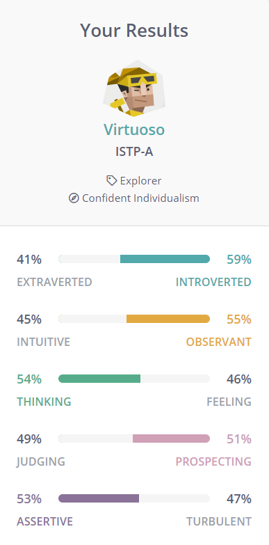
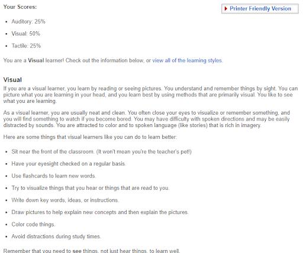
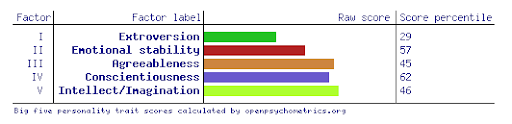

Genisis I.T Team Profile
Gabriel Duke


Being the “Protagonist” a so called ‘natural born leader, full of passion and charisma’ I have a fantastic opportunity to work with others and help them grow and achieve their goals in this team.
Being a ‘kinesthetic learner’ shows that I get most of my education through actions rather than reading or listening to lectures. This can help in the team through my urge to get stuck into the work and get things done to make the most of this assignment.
Being a ‘transformative leader’ should allow me to share our successes as a team and make sure everyone feels valued for their contributions!
Robert Mitrovski
I belong to INTP-T, I like to constantly improve myself and learn new stuff I am under the ’logician’ category I like to think in a more logical way, and this is a good trait to have as I believe it will help the group a lot when we are working on our assignment. I am however not very good with my creativity a lot however either way I will try my best to be creative as well and not just logical.
Liam Higginson
My personality type is INTJ-A. This archetype highlights that I am a perfectionist who is quite introverted. Having an “Architect” personality would be very useful in team work as I usually prefer ‘quality’ over ‘quantity’. In addition to be more thinking than feeling, that my rational brain holds more power over my emotional brain. Although sometimes the “Architect” personality is inconsistent as some days I lack motivation for perfection while others I do.
Hayden Lay

My personality being the Defender (ISFJ-T), this illustrates myself to be introverted – shy and not wanting to interact with other people, observant – analyse situations and individuals’ expressions, feeling – more emotionally driven than rationally, judging – I identify whether a risk is worth taking or not, and turbulent – always aim to push myself and go above and beyond with my work and tasks. These results gave me a proper overview of myself where I am the reserved type of person who has good analytical abilities, well-developed people skills and robust social relationships.

These results portray me as a visual learner where I should learn new concepts or ideas by reading or seeing pictures. From this idea, it is better for me to understand and remember things by sight and can picture what I am learning in my head. Furthermore, I should be neat and clean and avoid sounds and spoken directions as this can cause difficulties during my learning.

My extroversion results depict myself to be in the middle with a score percentile of 29, meaning that I can usually be outgoing and social and shy and nervous depending on the environment and the mood. My emotional stability shows to be very high with a score percentile of 62, explaining that I tend to be emotionally calm and stable, and I react less emotionally and less easily upset. My agreeableness is also shown to be high with a score percentile of 40, demonstrating that I am friendly and optimistic which allows me to make friends easily and always positive about certain outcomes such as this assignment. My conscientiousness is seen to be high with a score percentile of 46, indicating that I am careful with my actions and words, along with diligence in my work and tasks which means I will perform better on completing tasks on time. Lastly, my intellect/imagination scored low with a score percentile of 8, signifying that I tend to follow traditional and conventional paths than using my intellect or creativity. From this, this could make it difficult for tasks that are designed to use your imaginary and creativeness which can make it harder for me to handle and complete the assignment.
Isaac Miles
The Myers Briggs test identified me as ISTP which they describe as creative and practical, they like to create and design stuff. They are also relaxed, not worrying what the future might bring. The virtuoso can also be stubborn, ignoring other ideas or criticisms. They can be private, reserved and insensitive making it hard for people to understand them and coming off as rude. These traits are great for working on projects but not in a team so much and I do hope I embody them and can use it to help the team, and if I do possess the negative traits of the personality type I can see past them and work well in a team.
The learning style test says I am a visual learner, I learn from watching others which should help working in a team as I can learn from other on my team easily just from watching them work or seeing their work.
The big five personality trait test put me as mostly agreeable, conscientious, emotional stable and intelligent/imaginative while scoring low in extroversion which like the Myers Briggs test my be a sign of difficulty working in groups but otherwise good at solving problems and working on projects.
Ashley Hu


The results suggest that I am an open-minded person who is open to new ideas as well as being a more extroverted individual as well as someone who prefers a hands-on approach to tasks. This would mean that in a team environment I would be someone that prefers to initiate conversation and put ideas forward. I would also be someone that would suggest trying something even if I am unsure if it will be guaranteed to work. As a result, I could provide good leadership and direction to be a voice for a group. However, the downside could be that I may disregard the ideas of others or overlook certain steps that require more thorough thinking.
I believe the results are somewhat indicative of my personality and I agree with the traits listed by the results. While some statements are very specifically targeted, I believe that these results provide a broad overview of my personality and behaviours. Even the traits that scored lower, such as Emotional stability in the ‘5 Big Personality’ test, should not be interpreted as not being present. Rather, these traits are not as present as main traits that scored higher, and the results serve as an indication that the lesser scoring traits need to be accounted for more consciously. The results of the study type test also suggest that by being a pragmatic, I prefer more visual and hands on learning to understand something and would rather attempt trial and error to see if something works.
Group Processes:Overall, our group worked well we got majority of the work done that was due for Assignment 2, we were able to give each other
different sections of Assignment 2 to work on which allowed us to work efficiently. The main thing we can improve on that we need to do differently we need to change the
communication in our time because a lot of the time if someone asks something/or needs help etc. No one will respond until days later which
I believe pushed us back from finishing completely the assignment, because especially near the end we had so much work to do.
Career plans
Gabriel Duke
My career plan is vastly different from everyone else on this team, I plan on becoming a high school teacher, which is not in the field of IT or Computer science,
it appears the only common elements within these jobs is that I will be working with people (other teachers) to plan and form
how we are going to work effectively to ensure our job is done correctly and in line with each other as to not create confusion or trouble down the road
Robert Mitrovski
My career in the Information Technology field is for Software development. As a developer my job is to write and design code for the client's needs and produce a solution for the
client mine is very different to Gabriel’s job as he is wanting to be a teacher but as a Software Developer
his school might get me to help design a software solution.
Software developer and Hayden’s cyber security is similar as I write code to make software while Hayden is using code for security purposes.
The closest career plans are Gameplay programmer from Isaac and Freelance Programmer Liam as they both want to do programming orientated roles while Isaac
is more about games, and Liam is more about Freelance. Mine is specific to Software.
Liam Higginson
My career plan requires me to work with a wide array of clients from different businesses backgrounds.
Depending on client requirements I may have to work with a team of others in the information technology business or work solo.
This job requires extensive amounts of knowledge in software and different coding languages. In addition to this,
a freelance programmer also must know how to network their skills properly, so clients are able to pick them from the others in the market.
In comparison to this group, the main large difference is that with this job I can “be my own boss” as essentially,
I can also choose what clients I would like to work with and negotiate terms on my own behalf
Hayden Lay
My career plan being related around the information technology field, cyber security will require me to work with and monitor multiple networks, servers, as well as, having a strong knowledge and understanding
of networks, cybersecurity concepts, and information systems. However, as I will be required to meet and talk with clients, this will be different to Gabriel’s career as his clients will be requiring different
needs, such as learning biological concepts and ideas, where my clients may require security measures, or setting up defenses and anti-viruses.
Within my group, while there are some careers that have similar aspects and concepts to cyber security,
however, there is no precise similarity with my career and rather have many more differences than similarities with other careers.
Issac Miles
To get to where I want to be, a gameplay programmer I will need to start somewhere, that will be at university learning the basics of IT. My focus is on programming and software engineering as they
are key to becoming a gameplay programmer. It would help reach my goal by having a portfolio of work to demonstrate my abilities which means ill actually have to program apps. Courses wise I will do programming, project management, further programming as well as other options I may choose when I reach that stage.
Compared to other people in the group it’s a similar route to Robert and Liam who are programmers or software developers, we have different ideas of where we want to head but the path to getting there is very similar.
With Gabriel there isn't much similarity other than working as a team which is still quite an important transferable skill.
Ashley Hu
To successfully enter the field of software engineering, I plan to have a solid understanding of programming as well as getting experience in other technologies such as networks and even design.
Additionally, I’ll need to develop my problem-solving skills and it is also part of my plan to find some form of real-world experience in the IT field before I graduate.
I also plan on doing study during university breaks to further expand my knowledge of the field to put myself in the best position possible when graduating.
Compared to the peers in my group, there are similarities with most people in that we want to be in a development role in the IT industry.
The closest would be with Robert who plans on working in a similar position which requires similar skill sets. Hayden, Isaac and Liam have more specific field in which they want to explore but the skillsets for fundamentals will be similar for all of us. Gabriel’s career plan varies greatly as he intends to be a teacher and there are little to no similarities in our career plans.